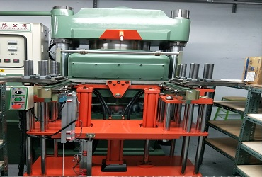
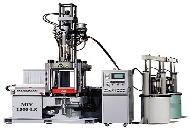

傳統且成熟的矽膠成型技術，透過真空熱壓方式將固態矽膠原料在模具中加熱硫化成型。適合大批量生產，模具成本相對較低，是矽膠製品量產的首選方案。
本公司主要技術致力於純矽/橡膠製品、矽膠與異料做結合，塑膠加矽膠結合件、金屬加矽膠結合件等多元化製程。

因應市場對於產品的精密需求與品質要求，為力求精益求精，鈞翔導入液態矽膠射出技術。LSR 技術具有高精密度、自動化程度高、生產效率優異等特點。
此技術大大實現客戶的精密需求，適用於醫療器材、電子零件、汽車配件等高精度要求的產品製造。